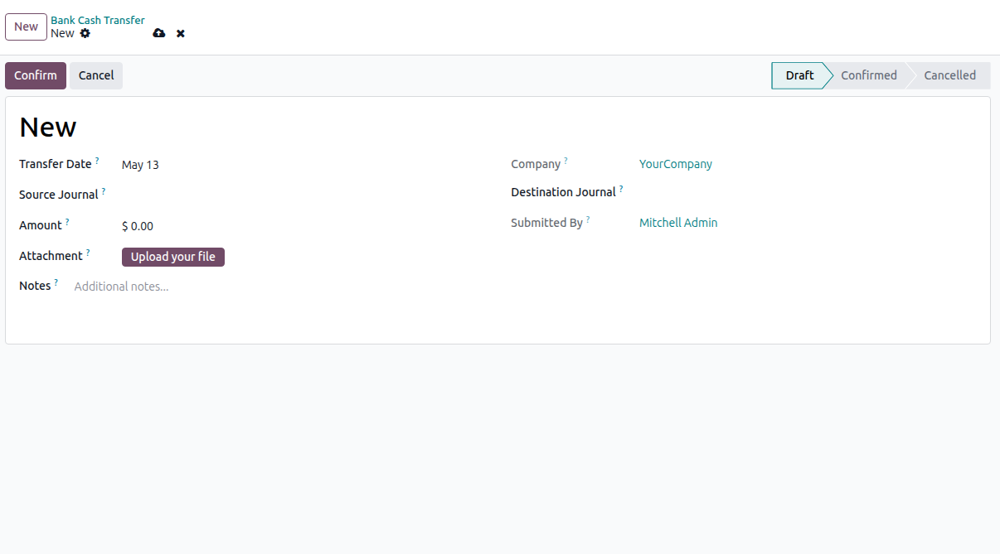

Odoo 19 · Accounting · Bank/Cash Transfers
Journal Transfer
Transfer funds between bank and cash journals from a dedicated workflow, with
automatic bank statement line creation and optional reconciliation using Odoo's
internal transfer model.
LGPL-3
Depends: account
Dedicated Transfer Menu
by Ispahani
Automatic Statement Entries
Creates matching withdrawal and deposit bank statement lines for every confirmed transfer.
Controlled Workflow
Manage transfers through draft, confirmed, and cancelled states with chatter tracking and attachments.
Internal Transfer Matching
Applies the Internal Transfer reconciliation model automatically when it is available in the company.
Overview
Journal Transfer gives accounting teams a focused way to move amounts
between bank and cash journals without manually entering both sides of the transfer.
Users create a single transfer record, select source and destination journals, enter
the amount, and confirm the transaction.
On confirmation, the module creates the outbound and inbound bank statement lines,
links them back to the transfer, and attempts automatic reconciliation through the
Internal Transfer model. This reduces repetitive data entry and keeps the transfer
process easier to trace from one document.
Screenshots

Dedicated Journal Transfer form with source journal, destination journal, amount, attachment, and status
tracking
What It Does
- Creates transfer records from a dedicated menu under the Invoicing app
- Supports bank and cash journals as transfer source and destination
- Generates two bank statement lines automatically on confirmation
- Stores proof documents through an attachment field
- Keeps related bank statement lines accessible from the transfer form
- Posts chatter messages for key actions and reconciliation results
Business Benefits
- Reduces manual entry for internal movement of funds
- Improves traceability between the transfer request and accounting impact
- Helps standardize bank-to-bank and cash-to-bank transfer handling
- Allows finance teams to attach deposit slips and supporting notes
- Works with standard Odoo accounting models instead of custom ledger logic
How It Works
- Create a new Journal Transfer from the Bank Cash Transfer menu.
- Select the source journal and destination journal.
- Enter the transfer amount, date, optional notes, and deposit slip attachment.
- Confirm the transfer once the details are verified.
- The module creates one negative bank statement line in the source journal and one positive line in the
destination journal.
- If an Internal Transfer reconciliation model exists, the module attempts to apply it automatically.
Technical Details
Model
Uses a dedicated bs.journal.transfer model with mail tracking.
Accounting Integration
Creates standard account.bank.statement.line records for both journals.
Security
Includes accounting user and manager access rights with multi-company record rules.
Sequence
Generates transfer references automatically using a dedicated sequence.
Installation
- Download the module from the Odoo App Store.
- Place the
bs_journal_transfer
folder in your Odoo addons path.
- Restart the Odoo server.
- Go to Apps, search for Journal Transfer, and install it.
- Open the Bank Cash Transfer menu under the Invoicing app and start creating
transfers.
Support & Contact
We’re here to help —
reach out via any channel below.
© 2026 ERP23 — a product of
BrainStation-23.
Released under LGPL-3. Compatible with Odoo 19.0.